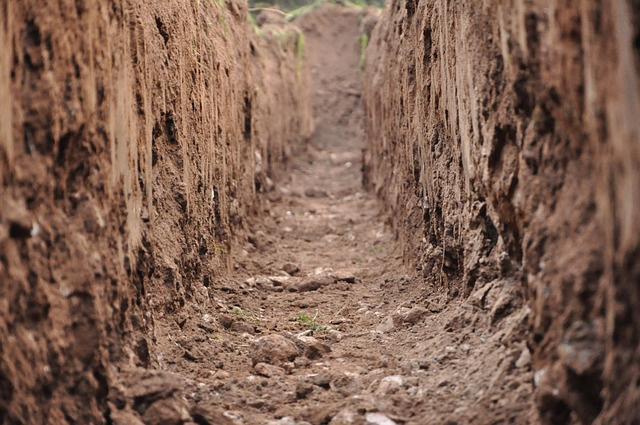

Answers Before You Invest Soil Evaluations

We consider the site & soil conditions of your property carefully to guarantee that our design will be the best solution to fit your septic and water supply needs. Whether you are planning to build a single family residence, a commercial building, or you want to know what type of system the property will require before you buy -- we are here to provide the answers you need.